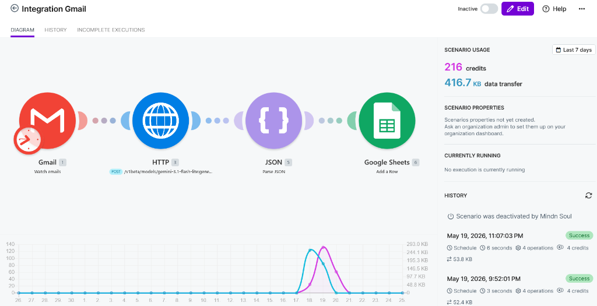
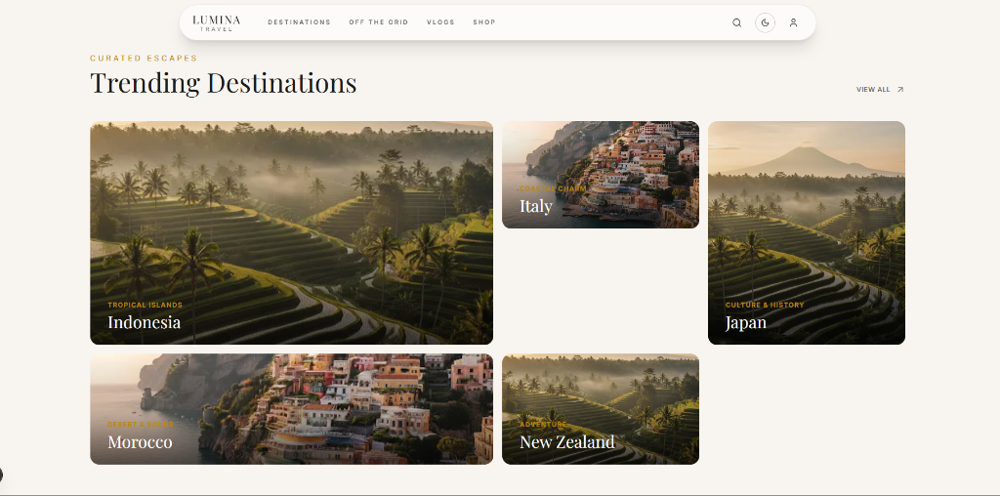

Project Portfolio
Engineering digital blueprints for scalable systems, high-performance infrastructure, and intelligent user experiences.

Nexus Cloud
Distributed edge computing platform designed to reduce latency for global end-users through automated point-of-presence deployment.

AI Email Triage Automation
Automation Developer & AI Specialist
Built an end-to-end AI-powered email automation workflow using Make.com, Google Gemini API, and Google Sheets to automatically watch, classify, and log incoming emails.

Lumina Travel Blog
Full-Stack Developer
High-performance content platform and travel log built using React.js, TypeScript, and Tailwind CSS with a PostgreSQL backend.

AI-Driven Analytics
Real-time predictive modeling for enterprise operations, leveraging deep learning to forecast supply chain bottlenecks.

Quantum ERP
Next-gen resource planning for global manufacturing. Orchestrates complex logistics with containerized microservices.

Skyline API
Modular gateway for global financial services, ensuring ultra-secure transaction processing with zero-trust architecture.

Studio Workspace
Internal tooling for collaborative system design and blueprinting, enabling real-time infrastructure mapping across teams.

Core Logic
Low-latency kernel optimization for IoT devices, maximizing hardware efficiency for high-density sensor networks.